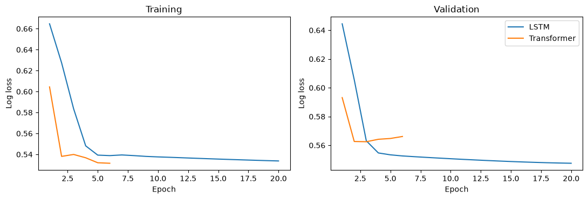
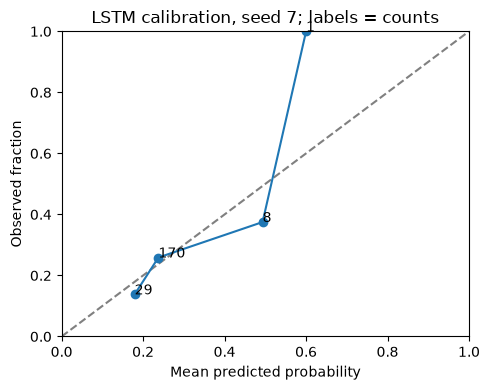

A catalogue history becomes a probability forecast
A linear LSTM walkthrough, then a Transformer comparison
Download prepared notebook Open Colab to upload the notebook Notebook with verified local outputs Three-seed reference comparison All tutorials
Prepared outputs were verified in a fresh local kernel using the frozen data pack. They describe seed 7 individual runs, not three-seed averages. Colab execution has not been verified.
Scientific question. Given the previous 30 days of catalogue information, what is the probability of at least one M ≥ 5 event in the region during the following seven days?
One learning example is a weekly forecast origin. Its input is a table with 30 rows (past days) and three columns (catalogue channels). Its target is zero or one.
The session remains 30 minutes of presentation + 30 minutes of practice. The practical follows the LSTM first, reads its probability errors, and then compares a Transformer. MLP and CNN1D remain clearly marked extensions after the live route.
This notebook makes the definition, compile, fit and predict of every model visible. It runs seed 7 once per model. These individual validation scores are separate from the three-seed reference comparison. Prepared outputs, when provided, come from a separately verified local execution of these cells; Colab execution has not been verified.
What a score means here. Training covers 2001–2016. Validation covers 2017–2020 and also determines early stopping, so the results describe retrospective development. The catalogue is frozen and revised; historical real-time availability has not been reconstructed. The previously inspected 2021–2025 period is not evaluated.
The 30-minute practical
Run Preparation A–F before the live explanation, or use the notebook with prepared outputs if a local run has been supplied. Each preparation step stays visible for self-study. Do not try to teach every preparation line during the session.
| Session time | Practical activity |
|---|---|
| 30–34 min | Confirm setup and inspect one input window and outcome |
| 34–43 min | Fit the references; read the LSTM definition, compile, fit and predict |
| 43–50 min | Interpret Brier score, log loss and validation support |
| 50–57 min | Follow the Transformer and compare the same validation origins |
| 57–60 min | Read the limits and choose an extension |
The live route ends before the MLP/CNN1D section; all earlier cells can run in order without those extensions.
Preparation A. Load the tools
Select a Python CPU runtime in Colab. If imports are unavailable, run %pip install tensorflow==2.19.1 keras==3.15.1 pandas scikit-learn matplotlib, restart the runtime, and begin again.
This walkthrough uses one declared seed, 7, so we can follow each fit directly. The full course guides retain three seeds (7, 17, 27). A single fit does not measure variability across initializations. The examples below generate their own results.
Code block 1 · Run the matching prepared-notebook cell in order. For self-study, copy into a new Colab code cell.
import io
import hashlib
import zipfile
import time
from pathlib import Path
from urllib.request import urlopen
import numpy as np
import pandas as pd
import matplotlib.pyplot as plt
import tensorflow as tf
from tensorflow import keras
from IPython.display import display
SEED = 7
LOOKBACK = 30
HORIZON = 7
EPOCHS = 20
BATCH_SIZE = 64
print("TensorFlow:", tf.__version__, "Keras:", keras.__version__)Verified local output · single seed — expand to compare
TensorFlow: 2.19.1 Keras: 3.15.1
Preparation B. Read the frozen catalogue
The download is pinned to the same Git commit as the published tutorial. The two checks identify the exact ZIP and catalogue. We read only the CSV in memory, so no extraction or project-folder machinery is needed.
The catalogue contains revised records. This is a retrospective teaching exercise. We use training (2001–2016) and validation (2017–2020); the previously inspected 2021–2025 period is not evaluated here.
For offline use, upload the frozen data pack as statsei14-data-pack.zip in the working directory before running this cell. Otherwise the cell downloads the pinned ZIP. Both paths check the same SHA-256 values.
Code block 2 · Run the matching prepared-notebook cell in order. For self-study, copy into a new Colab code cell.
PACK_URL = "https://raw.githubusercontent.com/FranPlaza/FranPlaza.github.io/0e7a7e4b1c38490018f11b26170fe6a87e4997f9/courses/statsei14/downloads/data-pack.zip"
PACK_SHA256 = "0ee5d4d71aafa19023fdb1ee6f289a11e7fd7f4ed88ad7a91032ca24505d10a2"
CATALOGUE_SHA256 = "16e9b731a5b407d75a2321d3d0d2c889542e8223a9ee4fe81efe624eb6b166d2"
local_pack = Path("statsei14-data-pack.zip")
if local_pack.exists():
pack_bytes = local_pack.read_bytes()
print("Data source: local frozen pack")
else:
with urlopen(PACK_URL, timeout=60) as response:
pack_bytes = response.read()
print("Data source: pinned download")
assert hashlib.sha256(pack_bytes).hexdigest() == PACK_SHA256
with zipfile.ZipFile(io.BytesIO(pack_bytes)) as archive:
csv_bytes = archive.read("data/frozen/usgs_chile_2000_2025.csv")
assert hashlib.sha256(csv_bytes).hexdigest() == CATALOGUE_SHA256
events = pd.read_csv(io.BytesIO(csv_bytes))
events["time"] = pd.to_datetime(events["time"], utc=True)
events = events.sort_values("time").reset_index(drop=True)
display(events[["time", "latitude", "longitude", "mag"]].head())Verified local output · single seed — expand to compare
Data source: local frozen pack
| time | latitude | longitude | mag | |
|---|---|---|---|---|
| 0 | 2000-01-07 11:49:11.720000+00:00 | -28.495 | -69.196 | 4.0 |
| 1 | 2000-01-08 11:43:58.150000+00:00 | -31.017 | -71.339 | 4.4 |
| 2 | 2000-01-11 13:16:34.420000+00:00 | -30.747 | -71.319 | 4.5 |
| 3 | 2000-01-18 17:12:18.360000+00:00 | -31.630 | -71.451 | 4.9 |
| 4 | 2000-01-19 01:24:00.150000+00:00 | -31.440 | -71.384 | 3.8 |
Preparation C. Select the region and define the daily calendar
Input events satisfy M ≥ 4.5. The future occurrence target uses M ≥ 5. We retain every calendar day, including days without events. The first year supplies history for the earliest training windows.
The three channels are log(1 + count), maximum magnitude excess above 4.5, and presence. Presence distinguishes an empty day from a day containing an event exactly at the input threshold.
Code block 3 · Run the matching prepared-notebook cell in order. For self-study, copy into a new Colab code cell.
START = pd.Timestamp("2000-01-01", tz="UTC")
END = pd.Timestamp("2026-01-01", tz="UTC")
days = pd.date_range(START, END - pd.Timedelta(days=1), freq="D")
FEATURES = ["log_count", "max_magnitude_excess", "has_event"]
inside = events["latitude"].between(-34.0, -28.0)
inside &= events["longitude"].between(-74.0, -69.0)
in_time = (events["time"] >= START) & (events["time"] < END)
selected = events.loc[inside & in_time & (events["mag"] >= 4.5)].copy()
selected["date"] = selected["time"].dt.floor("D")
print("Input events:", len(selected))Verified local output · single seed — expand to compare
Input events: 2121
Preparation D. Build three regional columns
Grouping counts the events on each day. Reindexing inserts the missing days. The separate target count will only be used to form outcomes after a forecast origin.
Code block 4 · Run the matching prepared-notebook cell in order. For self-study, copy into a new Colab code cell.
daily_count = selected.groupby("date").size().reindex(days, fill_value=0)
daily_count = daily_count.to_numpy(dtype="float32")
daily_maximum = selected.groupby("date")["mag"].max().reindex(days)
daily_excess = (daily_maximum - 4.5).fillna(0).to_numpy(dtype="float32")
larger_events = selected.loc[selected["mag"] >= 5.0]
target_counts = larger_events.groupby("date").size().reindex(days, fill_value=0)
target_counts = target_counts.to_numpy(dtype="float32")
daily_regional_raw = np.column_stack([
np.log1p(daily_count),
daily_excess,
(daily_count > 0).astype("float32"),
]).astype("float32")
daily_table = pd.DataFrame(daily_regional_raw, index=days, columns=FEATURES)
assert daily_count.sum() == len(selected)
display(daily_table.head(10))Verified local output · single seed — expand to compare
| log_count | max_magnitude_excess | has_event | |
|---|---|---|---|
| 2000-01-01 00:00:00+00:00 | 0.0 | 0.0 | 0.0 |
| 2000-01-02 00:00:00+00:00 | 0.0 | 0.0 | 0.0 |
| 2000-01-03 00:00:00+00:00 | 0.0 | 0.0 | 0.0 |
| 2000-01-04 00:00:00+00:00 | 0.0 | 0.0 | 0.0 |
| 2000-01-05 00:00:00+00:00 | 0.0 | 0.0 | 0.0 |
| 2000-01-06 00:00:00+00:00 | 0.0 | 0.0 | 0.0 |
| 2000-01-07 00:00:00+00:00 | 0.0 | 0.0 | 0.0 |
| 2000-01-08 00:00:00+00:00 | 0.0 | 0.0 | 0.0 |
| 2000-01-09 00:00:00+00:00 | 0.0 | 0.0 | 0.0 |
| 2000-01-10 00:00:00+00:00 | 0.0 | 0.0 | 0.0 |
Preparation E. One Monday becomes one learning example
At origin t, take inputs from [t − 30 days, t) and the outcome from [t, t + 7 days). The Python slices below implement those intervals directly. We omit target weeks that cross a partition boundary.
Only origins through 2020 are built. The retained examples are the same training and validation examples as in the original guide. Weekly targets do not overlap, although input histories share days.
Code block 5 · Run the matching prepared-notebook cell in order. For self-study, copy into a new Colab code cell.
VAL_START = pd.Timestamp("2017-01-01", tz="UTC")
TEST_START = pd.Timestamp("2021-01-01", tz="UTC")
candidate_origins = pd.date_range("2001-01-01", "2020-12-31", freq="W-MON", tz="UTC")
histories, outcomes, kept_origins = [], [], []
for origin in candidate_origins:
i = days.get_loc(origin)
target_end = origin + pd.Timedelta(days=HORIZON)
boundary = VAL_START if origin < VAL_START else TEST_START
if i < LOOKBACK or target_end > boundary:
continue
history = daily_regional_raw[i - LOOKBACK:i]
future_counts = target_counts[i:i + HORIZON]
outcome = int(future_counts.sum() > 0)
histories.append(history)
outcomes.append(outcome)
kept_origins.append(origin)
origins = pd.DatetimeIndex(kept_origins)
raw_regional = np.stack(histories)
y_regional = np.asarray(outcomes, dtype="int32")
train_mask = origins < VAL_START
val_mask = origins >= VAL_START
assert (origins[train_mask] + pd.Timedelta(days=HORIZON) <= VAL_START).all()
assert (origins[val_mask] + pd.Timedelta(days=HORIZON) <= TEST_START).all()
print("Training examples:", train_mask.sum(), "Validation examples:", val_mask.sum())
print("One input:", raw_regional[0].shape, "One outcome:", y_regional[0])Verified local output · single seed — expand to compare
Training examples: 834 Validation examples: 208 One input: (30, 3) One outcome: 1
Preparation F. Estimate scaling from training histories
There is one mean and one standard deviation per channel. The same three channels will also be used in the map extension. We keep the original weighting over overlapping training windows. Validation has no role in estimating these parameters.
Code block 6 · Run the matching prepared-notebook cell in order. For self-study, copy into a new Colab code cell.
regional_mean = raw_regional[train_mask].mean(axis=(0, 1), dtype=np.float64)
regional_scale = raw_regional[train_mask].std(axis=(0, 1), dtype=np.float64)
regional_scale = np.where(regional_scale > 0, regional_scale, 1.0)
X_regional = ((raw_regional - regional_mean) / regional_scale).astype("float32")
assert np.isfinite(X_regional).all()
display(pd.DataFrame({
"channel": FEATURES, "training_mean": regional_mean, "training_sd": regional_scale
}))Verified local output · single seed — expand to compare
| channel | training_mean | training_sd | |
|---|---|---|---|
| 0 | log_count | 0.125607 | 0.331051 |
| 1 | max_magnitude_excess | 0.055000 | 0.214342 |
| 2 | has_event | 0.150360 | 0.357424 |
1. Inspect one input before fitting a model
The array axes are examples × days × channels. An array row is not an individual earthquake. The raw table below shows one history before standardization; its label belongs to the following seven days.
Discuss: Which information remains after pooling all event locations into one regional history?
Code block 7 · Run the matching prepared-notebook cell in order. For self-study, copy into a new Colab code cell.
X_train = X_regional[train_mask]
X_val = X_regional[val_mask]
y_train = y_regional[train_mask].astype("float32")
y_val = y_regional[val_mask].astype("float32")
validation_origins = origins[val_mask]
display(pd.DataFrame({
"partition": ["training", "validation"],
"examples": [len(y_train), len(y_val)],
"positive_fraction": [y_train.mean(), y_val.mean()],
}))
print("X_train:", X_train.shape, "y_train:", y_train.shape)
example = 0
history_dates = pd.date_range(origins[example] - pd.Timedelta(days=LOOKBACK), periods=LOOKBACK)
display(pd.DataFrame(raw_regional[example], index=history_dates, columns=FEATURES).tail(10))
print("Forecast origin:", origins[example], "Future weekly outcome:", y_regional[example])Verified local output · single seed — expand to compare
| partition | examples | positive_fraction | |
|---|---|---|---|
| 0 | training | 834 | 0.236211 |
| 1 | validation | 208 | 0.250000 |
X_train: (834, 30, 3) y_train: (834,)
| log_count | max_magnitude_excess | has_event | |
|---|---|---|---|
| 2000-12-22 00:00:00+00:00 | 0.693147 | 0.4 | 1.0 |
| 2000-12-23 00:00:00+00:00 | 0.000000 | 0.0 | 0.0 |
| 2000-12-24 00:00:00+00:00 | 0.000000 | 0.0 | 0.0 |
| 2000-12-25 00:00:00+00:00 | 0.000000 | 0.0 | 0.0 |
| 2000-12-26 00:00:00+00:00 | 0.000000 | 0.0 | 0.0 |
| 2000-12-27 00:00:00+00:00 | 0.000000 | 0.0 | 0.0 |
| 2000-12-28 00:00:00+00:00 | 0.000000 | 0.0 | 0.0 |
| 2000-12-29 00:00:00+00:00 | 0.000000 | 0.0 | 0.0 |
| 2000-12-30 00:00:00+00:00 | 0.000000 | 0.0 | 0.0 |
| 2000-12-31 00:00:00+00:00 | 0.000000 | 0.0 | 0.0 |
Forecast origin: 2001-01-01 00:00:00+00:00 Future weekly outcome: 1
2. Fit two reference forecasts
The first forecast always returns the training positive fraction. Logistic regression uses all 90 lagged values, in the same order as the MLP below. Neither reference is tuned on validation.
Flattening preserves a fixed position for each day and channel. It does not randomly reorder the history.
Code block 8 · Run the matching prepared-notebook cell in order. For self-study, copy into a new Colab code cell.
from sklearn.linear_model import LogisticRegression
training_prevalence = float(y_train.mean())
p_prevalence = np.full(len(y_val), training_prevalence)
X_train_flat = X_train.reshape(len(X_train), LOOKBACK * len(FEATURES))
X_val_flat = X_val.reshape(len(X_val), LOOKBACK * len(FEATURES))
logistic = LogisticRegression(C=1.0, solver="lbfgs", max_iter=2000)
logistic.fit(X_train_flat, y_train)
assert logistic.n_iter_.max() < logistic.max_iter, "Inspect convergence."
p_logistic = logistic.predict_proba(X_val_flat)[:, 1]
print("Constant probability:", round(training_prevalence, 4))
print("Logistic regression input:", X_train_flat.shape)Verified local output · single seed — expand to compare
Constant probability: 0.2362 Logistic regression input: (834, 90)
3. LSTM: update a learned state through the history
The LSTM reads the oldest day first and the most recent day last. Its final state summarizes the 30-day input. The sigmoid layer converts that state into one weekly probability.
The state starts again for each history. It is not carried between training examples or into validation.
Discuss: The hidden state has 16 values. Why is it not yet the probability we want to report?
Code block 9 · Run the matching prepared-notebook cell in order. For self-study, copy into a new Colab code cell.
keras.backend.clear_session()
keras.utils.set_random_seed(SEED)
inputs = keras.Input(shape=X_train.shape[1:], name="history")
history_state = keras.layers.LSTM(16, stateful=False, name="read_history")(inputs)
probability = keras.layers.Dense(1, activation="sigmoid", name="weekly_probability")(history_state)
model_lstm = keras.Model(inputs, probability, name="LSTM")
model_lstm.summary()Verified local output · single seed — expand to compare
WARNING:tensorflow:From C:\Users\Francisco Plaza\AppData\Local\Temp\statsei14-transformer-pilot-20261007\Lib\site-packages\keras\src\backend\common\global_state.py:82: The name tf.reset_default_graph is deprecated. Please use tf.compat.v1.reset_default_graph instead.
Model: "LSTM"
┏━━━━━━━━━━━━━━━━━━━━━━━━━━━━━━━━━┳━━━━━━━━━━━━━━━━━━━━━━━━┳━━━━━━━━━━━━━━━┓ ┃ Layer (type) ┃ Output Shape ┃ Param # ┃ ┡━━━━━━━━━━━━━━━━━━━━━━━━━━━━━━━━━╇━━━━━━━━━━━━━━━━━━━━━━━━╇━━━━━━━━━━━━━━━┩ │ history (InputLayer) │ (None, 30, 3) │ 0 │ ├─────────────────────────────────┼────────────────────────┼───────────────┤ │ read_history (LSTM) │ (None, 16) │ 1,280 │ ├─────────────────────────────────┼────────────────────────┼───────────────┤ │ weekly_probability (Dense) │ (None, 1) │ 17 │ └─────────────────────────────────┴────────────────────────┴───────────────┘
Total params: 1,297 (5.07 KB)
Trainable params: 1,297 (5.07 KB)
Non-trainable params: 0 (0.00 B)
Train LSTM and obtain validation probabilities
Use the same optimizer, loss, stopping rule and chronological examples. The repeated calls keep this model’s training visible next to its definition.
Code block 10 · Run the matching prepared-notebook cell in order. For self-study, copy into a new Colab code cell.
model_lstm.compile(
optimizer=keras.optimizers.Adam(learning_rate=0.001),
loss=keras.losses.BinaryCrossentropy(),
)
stopping_lstm = keras.callbacks.EarlyStopping(
monitor="val_loss", patience=3, restore_best_weights=True
)
started = time.perf_counter()
history_lstm = model_lstm.fit(
X_train, y_train,
validation_data=(X_val, y_val),
epochs=EPOCHS, batch_size=BATCH_SIZE,
callbacks=[stopping_lstm], shuffle=False, verbose=2,
)
seconds_lstm = time.perf_counter() - started
p_lstm = model_lstm.predict(X_val, verbose=0).ravel()
print("First probabilities:", np.round(p_lstm[:5], 4))Verified local output · single seed — expand to compare
Epoch 1/20
14/14 - 1s - 50ms/step - loss: 0.6647 - val_loss: 0.6445
Epoch 2/20
14/14 - 0s - 5ms/step - loss: 0.6275 - val_loss: 0.6056
Epoch 3/20
14/14 - 0s - 5ms/step - loss: 0.5835 - val_loss: 0.5631
Epoch 4/20
14/14 - 0s - 5ms/step - loss: 0.5482 - val_loss: 0.5547
Epoch 5/20
14/14 - 0s - 5ms/step - loss: 0.5393 - val_loss: 0.5534
Epoch 6/20
14/14 - 0s - 5ms/step - loss: 0.5389 - val_loss: 0.5526
Epoch 7/20
14/14 - 0s - 5ms/step - loss: 0.5395 - val_loss: 0.5521
Epoch 8/20
14/14 - 0s - 5ms/step - loss: 0.5389 - val_loss: 0.5516
Epoch 9/20
14/14 - 0s - 5ms/step - loss: 0.5381 - val_loss: 0.5511
Epoch 10/20
14/14 - 0s - 5ms/step - loss: 0.5376 - val_loss: 0.5507
Epoch 11/20
14/14 - 0s - 5ms/step - loss: 0.5372 - val_loss: 0.5502
Epoch 12/20
14/14 - 0s - 5ms/step - loss: 0.5368 - val_loss: 0.5498
Epoch 13/20
14/14 - 0s - 5ms/step - loss: 0.5364 - val_loss: 0.5494
Epoch 14/20
14/14 - 0s - 5ms/step - loss: 0.5359 - val_loss: 0.5491
Epoch 15/20
14/14 - 0s - 5ms/step - loss: 0.5355 - val_loss: 0.5487
Epoch 16/20
14/14 - 0s - 5ms/step - loss: 0.5352 - val_loss: 0.5484
Epoch 17/20
14/14 - 0s - 5ms/step - loss: 0.5348 - val_loss: 0.5481
Epoch 18/20
14/14 - 0s - 5ms/step - loss: 0.5344 - val_loss: 0.5479
Epoch 19/20
14/14 - 0s - 5ms/step - loss: 0.5341 - val_loss: 0.5477
Epoch 20/20
14/14 - 0s - 5ms/step - loss: 0.5338 - val_loss: 0.5475
First probabilities:
[0.2111 0.1742 0.2462 0.2221 0.2103]
Read a probability error directly
For observed outcome y and predicted probability p, the Brier error is (p − y)². The overall score is its mean. This calculation makes the quantity being compared visible.
Code block 11 · Run the matching prepared-notebook cell in order. For self-study, copy into a new Colab code cell.
squared_errors_lstm = (p_lstm.astype(float) - y_val) ** 2
brier_lstm = squared_errors_lstm.mean()
display(pd.DataFrame({
"origin": validation_origins[:5],
"observed": y_val[:5].astype(int),
"probability": p_lstm[:5],
"squared_error": squared_errors_lstm[:5],
}))
print("LSTM validation Brier:", round(float(brier_lstm), 6))Verified local output · single seed — expand to compare
| origin | observed | probability | squared_error | |
|---|---|---|---|---|
| 0 | 2017-01-02 00:00:00+00:00 | 0 | 0.211066 | 0.044549 |
| 1 | 2017-01-09 00:00:00+00:00 | 0 | 0.174237 | 0.030359 |
| 2 | 2017-01-16 00:00:00+00:00 | 0 | 0.246197 | 0.060613 |
| 3 | 2017-01-23 00:00:00+00:00 | 0 | 0.222050 | 0.049306 |
| 4 | 2017-01-30 00:00:00+00:00 | 1 | 0.210282 | 0.623654 |
LSTM validation Brier: 0.181521
4. Evaluate the LSTM against the references
First compare probability forecasts for the same validation weeks. Brier score is the mean squared probability error; log loss also penalizes confident incorrect forecasts. Lower is better for both. Validation also selected the stopping epoch, so this is a development comparison.
The following calculation uses the two references and the LSTM only. You can inspect this complete comparison before introducing attention. The seed is recorded only for a neural fit.
Code block 12 · Run the matching prepared-notebook cell in order. For self-study, copy into a new Colab code cell.
probabilities_lstm = pd.DataFrame({
"Training prevalence": p_prevalence,
"Logistic regression": p_logistic,
"LSTM": p_lstm,
}, index=validation_origins)
predicted_lstm = probabilities_lstm.to_numpy(dtype=float)
observed = y_val[:, None].astype(float)
assert np.isfinite(predicted_lstm).all()
assert ((predicted_lstm >= 0) & (predicted_lstm <= 1)).all()
brier_before_attention = ((predicted_lstm - observed) ** 2).mean(axis=0)
safe_lstm = np.clip(predicted_lstm, 1e-7, 1 - 1e-7)
logloss_before_attention = -(observed * np.log(safe_lstm)
+ (1 - observed) * np.log1p(-safe_lstm)).mean(axis=0)
comparison_lstm = pd.DataFrame({
"model": probabilities_lstm.columns,
"seed": [None, None, SEED],
"brier": brier_before_attention,
"log_loss": logloss_before_attention,
})
display(comparison_lstm.round(6))
print("Validation weeks:", len(y_val), "Positive fraction:", round(float(y_val.mean()), 4))Verified local output · single seed — expand to compare
| model | seed | brier | log_loss | |
|---|---|---|---|---|
| 0 | Training prevalence | NaN | 0.187690 | 0.562855 |
| 1 | Logistic regression | NaN | 0.203664 | 0.614405 |
| 2 | LSTM | 7.0 | 0.181521 | 0.547512 |
Validation weeks: 208 Positive fraction: 0.25
5. Transformer: combine days through attention and position
The input and target stay fixed. Each day is projected to 16 features. A learned vector identifies each of the 30 positions. Attention then combines information across the observed days.
The small DayPosition class below is the only custom layer in this notebook. It defines one mathematical operation: add a trainable 30 × 16 position table. It does not hide data preparation, model construction, fitting or evaluation. Keeping this layer preserves the original trainable positions.
Code block 13 · Run the matching prepared-notebook cell in order. For self-study, copy into a new Colab code cell.
class DayPosition(keras.layers.Layer):
def build(self, input_shape):
self.positions = self.add_weight(
name="positions",
shape=(int(input_shape[1]), int(input_shape[2])),
initializer=keras.initializers.RandomNormal(stddev=0.02),
trainable=True,
)
super().build(input_shape)
def call(self, inputs):
return inputs + self.positionsFollow the represented history through one attention block
All 30 input days precede the forecast origin. Attention across this complete input window therefore does not access the future target. Positional vectors distinguish different lags. Residual additions and normalization preserve and refine the represented history.
The final pooling and sigmoid produce the same scalar weekly probability as the other models. Attention weights by themselves would not establish a physical triggering mechanism.
Code block 14 · Run the matching prepared-notebook cell in order. For self-study, copy into a new Colab code cell.
keras.backend.clear_session()
keras.utils.set_random_seed(SEED)
inputs = keras.Input(shape=X_train.shape[1:], name="history")
projected_days = keras.layers.Dense(16, name="project_day")(inputs)
positioned_days = DayPosition(name="day_positions")(projected_days)
attention = keras.layers.MultiHeadAttention(
num_heads=2, key_dim=8, dropout=0.0, name="attention"
)(positioned_days, positioned_days)
attended_days = keras.layers.Add(name="attention_residual")([positioned_days, attention])
attended_days = keras.layers.LayerNormalization(epsilon=1e-6, name="attention_norm")(attended_days)
feed_forward = keras.layers.Dense(16, activation="relu", name="ff_hidden")(attended_days)
feed_forward = keras.layers.Dense(16, name="ff_output")(feed_forward)
refined_days = keras.layers.Add(name="ff_residual")([attended_days, feed_forward])
refined_days = keras.layers.LayerNormalization(epsilon=1e-6, name="ff_norm")(refined_days)
history_summary = keras.layers.GlobalAveragePooling1D(name="pool_days")(refined_days)
probability = keras.layers.Dense(1, activation="sigmoid", name="weekly_probability")(history_summary)
model_transformer = keras.Model(inputs, probability, name="Transformer")
model_transformer.summary()Verified local output · single seed — expand to compare
Model: "Transformer"
┏━━━━━━━━━━━━━━━━━━━━━┳━━━━━━━━━━━━━━━━━━━┳━━━━━━━━━━━━┳━━━━━━━━━━━━━━━━━━━┓ ┃ Layer (type) ┃ Output Shape ┃ Param # ┃ Connected to ┃ ┡━━━━━━━━━━━━━━━━━━━━━╇━━━━━━━━━━━━━━━━━━━╇━━━━━━━━━━━━╇━━━━━━━━━━━━━━━━━━━┩ │ history │ (None, 30, 3) │ 0 │ - │ │ (InputLayer) │ │ │ │ ├─────────────────────┼───────────────────┼────────────┼───────────────────┤ │ project_day (Dense) │ (None, 30, 16) │ 64 │ history[0][0] │ ├─────────────────────┼───────────────────┼────────────┼───────────────────┤ │ day_positions │ (None, 30, 16) │ 480 │ project_day[0][0] │ │ (DayPosition) │ │ │ │ ├─────────────────────┼───────────────────┼────────────┼───────────────────┤ │ attention │ (None, 30, 16) │ 1,088 │ day_positions[0]… │ │ (MultiHeadAttentio… │ │ │ day_positions[0]… │ ├─────────────────────┼───────────────────┼────────────┼───────────────────┤ │ attention_residual │ (None, 30, 16) │ 0 │ day_positions[0]… │ │ (Add) │ │ │ attention[0][0] │ ├─────────────────────┼───────────────────┼────────────┼───────────────────┤ │ attention_norm │ (None, 30, 16) │ 32 │ attention_residu… │ │ (LayerNormalizatio… │ │ │ │ ├─────────────────────┼───────────────────┼────────────┼───────────────────┤ │ ff_hidden (Dense) │ (None, 30, 16) │ 272 │ attention_norm[0… │ ├─────────────────────┼───────────────────┼────────────┼───────────────────┤ │ ff_output (Dense) │ (None, 30, 16) │ 272 │ ff_hidden[0][0] │ ├─────────────────────┼───────────────────┼────────────┼───────────────────┤ │ ff_residual (Add) │ (None, 30, 16) │ 0 │ attention_norm[0… │ │ │ │ │ ff_output[0][0] │ ├─────────────────────┼───────────────────┼────────────┼───────────────────┤ │ ff_norm │ (None, 30, 16) │ 32 │ ff_residual[0][0] │ │ (LayerNormalizatio… │ │ │ │ ├─────────────────────┼───────────────────┼────────────┼───────────────────┤ │ pool_days │ (None, 16) │ 0 │ ff_norm[0][0] │ │ (GlobalAveragePool… │ │ │ │ ├─────────────────────┼───────────────────┼────────────┼───────────────────┤ │ weekly_probability │ (None, 1) │ 17 │ pool_days[0][0] │ │ (Dense) │ │ │ │ └─────────────────────┴───────────────────┴────────────┴───────────────────┘
Total params: 2,257 (8.82 KB)
Trainable params: 2,257 (8.82 KB)
Non-trainable params: 0 (0.00 B)
Train Transformer and obtain validation probabilities
Use the same optimizer, loss, stopping rule and chronological examples. The repeated calls keep this model’s training visible next to its definition.
Code block 15 · Run the matching prepared-notebook cell in order. For self-study, copy into a new Colab code cell.
model_transformer.compile(
optimizer=keras.optimizers.Adam(learning_rate=0.001),
loss=keras.losses.BinaryCrossentropy(),
)
stopping_transformer = keras.callbacks.EarlyStopping(
monitor="val_loss", patience=3, restore_best_weights=True
)
started = time.perf_counter()
history_transformer = model_transformer.fit(
X_train, y_train,
validation_data=(X_val, y_val),
epochs=EPOCHS, batch_size=BATCH_SIZE,
callbacks=[stopping_transformer], shuffle=False, verbose=2,
)
seconds_transformer = time.perf_counter() - started
p_transformer = model_transformer.predict(X_val, verbose=0).ravel()
print("First probabilities:", np.round(p_transformer[:5], 4))Verified local output · single seed — expand to compare
Epoch 1/20
14/14 - 1s - 86ms/step - loss: 0.6045 - val_loss: 0.5931
Epoch 2/20
14/14 - 0s - 5ms/step - loss: 0.5381 - val_loss: 0.5626
Epoch 3/20
14/14 - 0s - 4ms/step - loss: 0.5399 - val_loss: 0.5625
Epoch 4/20
14/14 - 0s - 4ms/step - loss: 0.5368 - val_loss: 0.5642
Epoch 5/20
14/14 - 0s - 4ms/step - loss: 0.5320 - val_loss: 0.5647
Epoch 6/20
14/14 - 0s - 4ms/step - loss: 0.5316 - val_loss: 0.5661
First probabilities: [0.2969 0.2649 0.2397 0.2303 0.2337]
6. Compare LSTM and Transformer on the same validation weeks
Each column below contains predictions for the same validation origins. We calculate both scores directly, over rows. Log loss penalizes confident incorrect probabilities strongly. Clipping is only for the logarithms; Brier uses the original probabilities.
These are single-seed results, with parameter counts and the actual number of epochs. They are not the three-seed means in the original tutorial. Validation also determined early stopping, so the table is development evidence.
Code block 16 · Run the matching prepared-notebook cell in order. For self-study, copy into a new Colab code cell.
probabilities = pd.DataFrame({
"Training prevalence": p_prevalence,
"Logistic regression": p_logistic,
"LSTM": p_lstm,
"Transformer": p_transformer,
}, index=validation_origins)
predicted = probabilities.to_numpy(dtype=float)
observed = y_val[:, None].astype(float)
assert np.isfinite(predicted).all() and ((predicted >= 0) & (predicted <= 1)).all()
squared_errors = (predicted - observed) ** 2
brier = squared_errors.mean(axis=0)
safe_probabilities = np.clip(predicted, 1e-7, 1 - 1e-7)
log_errors = -(observed * np.log(safe_probabilities)
+ (1 - observed) * np.log1p(-safe_probabilities))
logloss = log_errors.mean(axis=0)
comparison = pd.DataFrame({
"model": probabilities.columns,
"seed": [None, None, SEED, SEED],
"brier": brier,
"log_loss": logloss,
"parameters": [1, 91, model_lstm.count_params(), model_transformer.count_params()],
"epochs": [0, 0, len(history_lstm.history["loss"]), len(history_transformer.history["loss"])],
})
display(comparison.round(6))Verified local output · single seed — expand to compare
| model | seed | brier | log_loss | parameters | epochs | |
|---|---|---|---|---|---|---|
| 0 | Training prevalence | NaN | 0.187690 | 0.562855 | 1 | 0 |
| 1 | Logistic regression | NaN | 0.203664 | 0.614405 | 91 | 0 |
| 2 | LSTM | 7.0 | 0.181521 | 0.547512 | 1297 | 20 |
| 3 | Transformer | 7.0 | 0.187901 | 0.562477 | 2257 | 6 |
7. Inspect learning curves
The curves show how training and validation loss changed during fitting. Predictions above use the restored best weights; the history still includes all executed epochs.
Discuss: Did the more complex model improve on the constant reference? What information or experiment would help explain the difference? A single run cannot establish an architecture ranking.
Code block 17 · Run the matching prepared-notebook cell in order. For self-study, copy into a new Colab code cell.
histories = {
"LSTM": history_lstm, "Transformer": history_transformer,
}
fig, axes = plt.subplots(1, 2, figsize=(11, 3.8))
for name, fitted_history in histories.items():
epoch = np.arange(1, len(fitted_history.history["loss"]) + 1)
axes[0].plot(epoch, fitted_history.history["loss"], label=name)
axes[1].plot(epoch, fitted_history.history["val_loss"], label=name)
axes[0].set(title="Training", xlabel="Epoch", ylabel="Log loss")
axes[1].set(title="Validation", xlabel="Epoch", ylabel="Log loss")
axes[1].legend()
fig.tight_layout()
plt.show()Verified local output · single seed — expand to compare

Live route complete
You have turned one 30 × 3 history into a probability, evaluated that probability against two references, and changed the architecture while preserving the input and outcome. Stop here for the 30-minute practical.
Ask: did the individual neural runs improve both scores, and what would be needed for an independent assessment? One seed does not measure initialization variability; validation is also used for early stopping. An untouched evaluation period and a predeclared protocol would be needed for a new assessment.
After the session: continue with MLP/CNN1D below, daily maps, the six-cell graph, or the separately retained three-seed reference comparison.
Extension A. MLP: combine values at fixed lag positions
Flatten turns the 30 × 3 table into 90 numbers. The hidden layer learns nonlinear combinations of those values. Its weights can distinguish fixed lag positions, but the layer does not share the same detector across different days.
The network is built directly below. There is no model-constructor function to look up elsewhere.
Code block 18 · Run the matching prepared-notebook cell in order. For self-study, copy into a new Colab code cell.
keras.backend.clear_session()
keras.utils.set_random_seed(SEED)
inputs = keras.Input(shape=X_train.shape[1:], name="history")
fixed_lags = keras.layers.Flatten(name="fixed_lag_positions")(inputs)
hidden = keras.layers.Dense(16, activation="relu", name="hidden")(fixed_lags)
probability = keras.layers.Dense(1, activation="sigmoid", name="weekly_probability")(hidden)
model_mlp = keras.Model(inputs, probability, name="MLP")
model_mlp.summary()Verified local output · single seed — expand to compare
Model: "MLP"
┏━━━━━━━━━━━━━━━━━━━━━━━━━━━━━━━━━┳━━━━━━━━━━━━━━━━━━━━━━━━┳━━━━━━━━━━━━━━━┓ ┃ Layer (type) ┃ Output Shape ┃ Param # ┃ ┡━━━━━━━━━━━━━━━━━━━━━━━━━━━━━━━━━╇━━━━━━━━━━━━━━━━━━━━━━━━╇━━━━━━━━━━━━━━━┩ │ history (InputLayer) │ (None, 30, 3) │ 0 │ ├─────────────────────────────────┼────────────────────────┼───────────────┤ │ fixed_lag_positions (Flatten) │ (None, 90) │ 0 │ ├─────────────────────────────────┼────────────────────────┼───────────────┤ │ hidden (Dense) │ (None, 16) │ 1,456 │ ├─────────────────────────────────┼────────────────────────┼───────────────┤ │ weekly_probability (Dense) │ (None, 1) │ 17 │ └─────────────────────────────────┴────────────────────────┴───────────────┘
Total params: 1,473 (5.75 KB)
Trainable params: 1,473 (5.75 KB)
Non-trainable params: 0 (0.00 B)
Train MLP and obtain validation probabilities
compile chooses the optimizer and loss. fit adjusts the weights. The stopping rule monitors validation loss and restores the best weights. predict then applies those fitted weights to the validation histories.
Every network uses Adam with learning rate 0.001, up to 20 epochs, batches of 64 and the same stopping rule. Parameter counts differ. These settings define a teaching comparison, not an exhaustive tuning of each model family.
Code block 19 · Run the matching prepared-notebook cell in order. For self-study, copy into a new Colab code cell.
model_mlp.compile(
optimizer=keras.optimizers.Adam(learning_rate=0.001),
loss=keras.losses.BinaryCrossentropy(),
)
stopping_mlp = keras.callbacks.EarlyStopping(
monitor="val_loss", patience=3, restore_best_weights=True
)
started = time.perf_counter()
history_mlp = model_mlp.fit(
X_train, y_train,
validation_data=(X_val, y_val),
epochs=EPOCHS, batch_size=BATCH_SIZE,
callbacks=[stopping_mlp], shuffle=False, verbose=2,
)
seconds_mlp = time.perf_counter() - started
p_mlp = model_mlp.predict(X_val, verbose=0).ravel()
print("First probabilities:", np.round(p_mlp[:5], 4))Verified local output · single seed — expand to compare
Epoch 1/20
14/14 - 0s - 23ms/step - loss: 0.8741 - val_loss: 0.8236
Epoch 2/20
14/14 - 0s - 3ms/step - loss: 0.7797 - val_loss: 0.7609
Epoch 3/20
14/14 - 0s - 3ms/step - loss: 0.7145 - val_loss: 0.7135
Epoch 4/20
14/14 - 0s - 3ms/step - loss: 0.6650 - val_loss: 0.6778
Epoch 5/20
14/14 - 0s - 3ms/step - loss: 0.6279 - val_loss: 0.6516
Epoch 6/20
14/14 - 0s - 3ms/step - loss: 0.5998 - val_loss: 0.6326
Epoch 7/20
14/14 - 0s - 3ms/step - loss: 0.5786 - val_loss: 0.6189
Epoch 8/20
14/14 - 0s - 3ms/step - loss: 0.5624 - val_loss: 0.6085
Epoch 9/20
14/14 - 0s - 3ms/step - loss: 0.5495 - val_loss: 0.6009
Epoch 10/20
14/14 - 0s - 3ms/step - loss: 0.5392 - val_loss: 0.5954
Epoch 11/20
14/14 - 0s - 3ms/step - loss: 0.5306 - val_loss: 0.5912
Epoch 12/20
14/14 - 0s - 3ms/step - loss: 0.5231 - val_loss: 0.5879
Epoch 13/20
14/14 - 0s - 3ms/step - loss: 0.5164 - val_loss: 0.5856
Epoch 14/20
14/14 - 0s - 3ms/step - loss: 0.5105 - val_loss: 0.5837
Epoch 15/20
14/14 - 0s - 3ms/step - loss: 0.5050 - val_loss: 0.5822
Epoch 16/20
14/14 - 0s - 3ms/step - loss: 0.5000 - val_loss: 0.5811
Epoch 17/20
14/14 - 0s - 3ms/step - loss: 0.4952 - val_loss: 0.5803
Epoch 18/20
14/14 - 0s - 3ms/step - loss: 0.4907 - val_loss: 0.5795
Epoch 19/20
14/14 - 0s - 3ms/step - loss: 0.4863 - val_loss: 0.5789
Epoch 20/20
14/14 - 0s - 3ms/step - loss: 0.4821 - val_loss: 0.5789
WARNING:tensorflow:5 out of the last 15 calls to <function TensorFlowTrainer.make_predict_function.<locals>.one_step_on_data_distributed at 0x000002B886FC32E0> triggered tf.function retracing. Tracing is expensive and the excessive number of tracings could be due to (1) creating @tf.function repeatedly in a loop, (2) passing tensors with different shapes, (3) passing Python objects instead of tensors. For (1), please define your @tf.function outside of the loop. For (2), @tf.function has reduce_retracing=True option that can avoid unnecessary retracing. For (3), please refer to https://www.tensorflow.org/guide/function#controlling_retracing and https://www.tensorflow.org/api_docs/python/tf/function for more details.
First probabilities: [0.3634 0.4025 0.3187 0.2095 0.1107]
Extension C. Compare all four neural architectures
This section runs after both extension models. It repeats the explicit score calculation so the full comparison remains easy to inspect. It includes the same validation origins and reports one seed per model; it does not replace the three-seed reference table.
Code block 22 · Run the matching prepared-notebook cell in order. For self-study, copy into a new Colab code cell.
probabilities = pd.DataFrame({
"Training prevalence": p_prevalence,
"Logistic regression": p_logistic,
"MLP": p_mlp,
"CNN1D": p_cnn1d,
"LSTM": p_lstm,
"Transformer": p_transformer,
}, index=validation_origins)
predicted = probabilities.to_numpy(dtype=float)
observed = y_val[:, None].astype(float)
assert np.isfinite(predicted).all() and ((predicted >= 0) & (predicted <= 1)).all()
squared_errors = (predicted - observed) ** 2
brier = squared_errors.mean(axis=0)
safe_probabilities = np.clip(predicted, 1e-7, 1 - 1e-7)
log_errors = -(observed * np.log(safe_probabilities)
+ (1 - observed) * np.log1p(-safe_probabilities))
logloss = log_errors.mean(axis=0)
comparison = pd.DataFrame({
"model": probabilities.columns,
"seed": [None, None, SEED, SEED, SEED, SEED],
"brier": brier,
"log_loss": logloss,
"parameters": [1, 91, model_mlp.count_params(), model_cnn1d.count_params(),
model_lstm.count_params(), model_transformer.count_params()],
"epochs": [0, 0, len(history_mlp.history["loss"]), len(history_cnn1d.history["loss"]),
len(history_lstm.history["loss"]), len(history_transformer.history["loss"])],
})
display(comparison.round(6))Verified local output · single seed — expand to compare
| model | seed | brier | log_loss | parameters | epochs | |
|---|---|---|---|---|---|---|
| 0 | Training prevalence | NaN | 0.187690 | 0.562855 | 1 | 0 |
| 1 | Logistic regression | NaN | 0.203664 | 0.614405 | 91 | 0 |
| 2 | MLP | 7.0 | 0.191811 | 0.578916 | 1473 | 20 |
| 3 | CNN1D | 7.0 | 0.187063 | 0.561202 | 961 | 10 |
| 4 | LSTM | 7.0 | 0.181521 | 0.547512 | 1297 | 20 |
| 5 | Transformer | 7.0 | 0.187901 | 0.562477 | 2257 | 6 |
Optional. Inspect calibration and support
Within a probability bin, compare the average prediction with the fraction of positive weeks. Always inspect the number of weeks contributing to a point. Here we inspect the LSTM from this seed; no ensemble is constructed.
Overlapping histories and seismic sequences create dependence. The plot is descriptive and does not supply independent-bin confidence intervals.
Code block 23 · Run the matching prepared-notebook cell in order. For self-study, copy into a new Colab code cell.
calibration_data = pd.DataFrame({"probability": p_lstm, "observed": y_val})
calibration_data["bin"] = pd.cut(
calibration_data["probability"], bins=np.linspace(0, 1, 6), include_lowest=True
)
calibration = calibration_data.groupby("bin", observed=True).agg(
count=("observed", "size"),
mean_probability=("probability", "mean"),
observed_fraction=("observed", "mean"),
)
display(calibration)
fig, ax = plt.subplots(figsize=(5, 4))
ax.plot([0, 1], [0, 1], "--", color="grey")
ax.plot(calibration["mean_probability"], calibration["observed_fraction"], "o-")
for row in calibration.itertuples():
ax.annotate(str(row.count), (row.mean_probability, row.observed_fraction))
ax.set(xlabel="Mean predicted probability", ylabel="Observed fraction",
title=f"LSTM calibration, seed {SEED}; labels = counts", xlim=(0, 1), ylim=(0, 1))
fig.tight_layout()
plt.show()Verified local output · single seed — expand to compare
| count | mean_probability | observed_fraction | |
|---|---|---|---|
| bin | |||
| (-0.001, 0.2] | 29 | 0.179272 | 0.137931 |
| (0.2, 0.4] | 170 | 0.237560 | 0.258824 |
| (0.4, 0.6] | 8 | 0.493324 | 0.375000 |
| (0.6, 0.8] | 1 | 0.600097 | 1.000000 |

Optional. Save the complete single-seed run
The exported tables record the seed and are saved in outputs_temporal. Copy that folder before another run, because the filenames are reused. For a repeated comparison, change SEED to 17 and then 27, restart, and run the complete notebook each time. Keep every declared run and summarize the separate score tables. Do not select a favourable seed. Alternatively, use the complete three-seed guide.
Changing the representation is a separate question from changing the architecture. Adding an ETAS-inspired channel belongs to that next experiment. The spatial guides retain geographic cells and estimate one probability per cell, so their numerical scores answer a different target from this regional comparison.
Code block 24 · Run the matching prepared-notebook cell in order. For self-study, copy into a new Colab code cell.
output_dir = Path("outputs_temporal")
output_dir.mkdir(exist_ok=True)
comparison.to_csv(output_dir / "validation_metrics.csv", index=False)
probabilities.assign(observed=y_val, seed=SEED).to_csv(
output_dir / "validation_predictions.csv", index_label="origin",
)
comparison_lstm.to_csv(output_dir / "lstm_reference_metrics.csv", index=False)
print("Tables saved to:", output_dir.resolve())
protocol = pd.DataFrame([{
"seed": SEED, "lookback_days": LOOKBACK, "horizon_days": HORIZON,
"train_start": "2001-01-01", "train_end_exclusive": "2017-01-01",
"validation_start": "2017-01-01", "validation_end_exclusive": "2021-01-01",
"training_examples": int(train_mask.sum()), "validation_examples": int(val_mask.sum()),
"maximum_epochs": EPOCHS, "batch_size": BATCH_SIZE, "early_stopping_patience": 3,
"pack_sha256": PACK_SHA256, "catalogue_sha256": CATALOGUE_SHA256,
"tensorflow_version": tf.__version__, "keras_version": keras.__version__,
"historical_as_of_verified": False, "colab_execution_verified": False,
}])
protocol.to_csv(output_dir / "protocol.csv", index=False)Verified local output · single seed — expand to compare
Tables saved to: H:\Otros ordenadores\Mi PC\1_Proyectos\2026 - Statsei 14 -\statsei14-deep-learning\qa\linear-integration-2026-10-07\executions\temporal-8809d0d176\outputs_temporal
Sources
- Original StatSei14 temporal tutorial, frozen data and protocol
- Keras model training API: compile, fit and predict
- Keras Functional API
- Keras MultiHeadAttention
Francisco Plaza-Vega · STATSEI14 · 13 October 2026